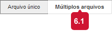

Carregar materiais no ambiente virtual
Para compartilhar materiais nas disciplinas é importante ter em mente quais arquivos são específicos da disciplina e não se repetirão em disciplinas futuras (plano de aula, por exemplo) e quais arquivos podem ser reutilizados em diferentes turmas/disciplinas, como estudos de caso, artigos etc.
O primeiro passo é carregar esses arquivos “menos voláteis” na Coleção de conteúdos, uma espécie de pendrive virtual em que o professor pode alocar todo seu material. Uma vez carregados neste local, os arquivos podem ser referenciados em diferentes ambientes, evitando que tenham de ser recarregados a cada nova turma
Carregue os materiais pasta Meus Conteúdos. Essa pasta é individual e não tem vínculo com qualquer disciplina.
Para facilitar a organização dos arquivos, separe-os em pastas e subpastas. Um exemplo é dividir os materiais em categorias: exercícios, casos, apresentações de slides etc.
Os arquivos podem ser inseridos na Coleção de conteúdos de duas maneiras. Em Carregar arquivos é possível selecionar um ou mais arquivos de uma só vez. Em Carregar pacote o arquivo .zip ou .rar é descompactado automaticamente ao ser inserido.
Após clicar em Carregar arquivos, escolha a opção Múltiplos arquivos no canto superior direito.

Utilize o botão Procurar para localizar os arquivos e/ou pastas em seu computador ou dispositivo móvel ou, se preferir, arraste os arquivos ou pastas diretamente para a lista
Se desejar remover um arquivo da lista, clique no ícone do item correspondente.
Ao terminar, clique em Enviar.
Também é possível selecionar um único arquivo compactado.
Selecione o arquivo em Escolher arquivo e confirme clicando em Enviar.
O arquivo será automaticamente descompactado dentro da Coleção de contéudos.
Se houver necessidade de substituir um arquivo inserido na Coleção de conteúdos você pode fazer a troca sem que isso interfira nos materiais que já foram compartilhados nos ambientes virtuais das disciplinas.
Ao substituir o arquivo, todas as disciplinas que utilizam o arquivo serão automaticamente atualizadas.
No ambiente da disciplina, quando for inserir um material que está na Coleção de conteúdos, escolha a opção Procurar Coleção de conteúdo. Para buscar arquivos que estão salvos no seu computador, rede ou pendrive, escolha Procurar Meu computador. Neste caso, o arquivo ficará vinculado à disciplina.
Localize o arquivo nos Meus Conteúdos, marque-o na lista e clique em Enviar.